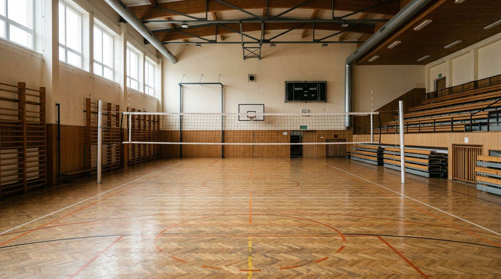
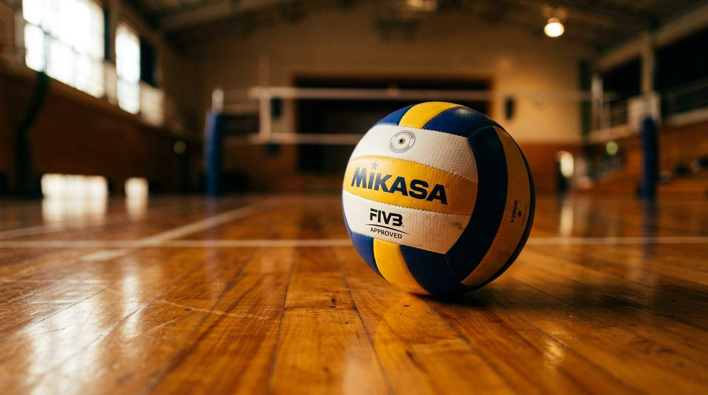

O oddíle
Volejbal v Čerčanech
Volejbalový oddíl TJ Slavoj Čerčany je jedním z mála fungujících volejbalových oddílů v okrese Benešov. Pracují zde skupiny přípravky, žákyň, dorostu, mužů i žen a oddíl se pravidelně účastní okresních a krajských soutěží a turnajů.
Oddíl má téměř sto členů – od nejmenších dětí po dospělé.
Součást TJ Slavoj Čerčany
Volejbal pod střechou TJ Slavoj Čerčany, z.s. – tradiční tělovýchovné jednoty z Čerčan. Vedle volejbalu tu působí oddíly fotbalu, tenisu, stolního tenisu a sportu pro všechny. Oddíly se provozují samostatně, ale vždy v rámci jednoty jako celku.
Naše zázemí

- Tělocvična TJ Slavoj, Sázavská 470 – tréninky a domácí zápasy
- Hala ZŠ Čerčany, Sokolská 180 – zápasy žákyň, mládežnické kroužky
- Víceúčelové hřiště, Sázavská 470 – venkovní kurt 16 × 8 m s tribunami
